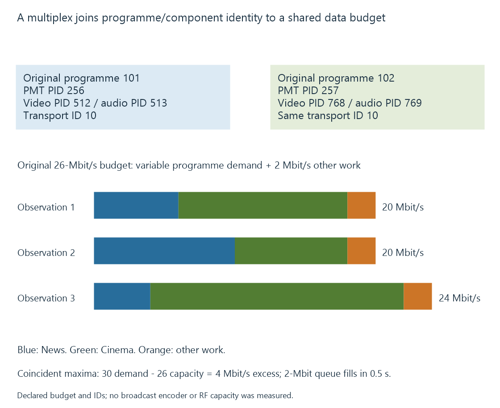

Broadcast multiplexes
A broadcast multiplex combines several service/component data streams into one defined transport/acquisition context, with shared capacity and signaling linking the selected programme to its packets.
A broadcast multiplex combines several data streams into one transmission/transport context. A receiver can acquire that shared context before selecting the programme the viewer requested.
The RF carrier, multiplex and selected programme are therefore related but different objects.
Programme tables connect service selection to packets
Use this original readable MPEG-TS-style model:
{
"transportStreamId": 10,
"services": [
{"programNumber": 101, "pmtPid": 256, "videoPid": 512, "audioPid": 513},
{"programNumber": 102, "pmtPid": 257, "videoPid": 768, "audioPid": 769}
]
}
It is not a native table or a captured transport.
The PAT relationship associates a programme number with its programme-map PID. The corresponding PMT identifies the relevant components. Selecting programme 101 is not the same operation as filtering arbitrary packets with PID 101.
MPEG-TS programme tables develops that structure in detail.

Each service can have several audio, subtitle and other components beyond the simplified video/audio pair shown here.
Capacity is shared over time
Consider an original twenty-six-Mbit/s transport-budget exercise, with two Mbit/s reserved for other declared work:
| Observation | News demand | Cinema demand | Other work | Combined |
|---|---|---|---|---|
| 1 | 6 Mbit/s | 12 Mbit/s | 2 Mbit/s | 20 Mbit/s |
| 2 | 10 Mbit/s | 8 Mbit/s | 2 Mbit/s | 20 Mbit/s |
| 3 | 4 Mbit/s | 18 Mbit/s | 2 Mbit/s | 24 Mbit/s |
All three observations fit the budget. News peaks at ten and Cinema at eighteen, but those peaks do not coincide in this sample.
Adding their independent maxima plus other work would give thirty Mbit/s. That is not the continuously observed total.
Statistical multiplexing can exploit differing demands under an implemented allocation policy. It still needs to keep the actual transmitted result within its capacity and constraints.
A coincident burst needs another decision
If News and Cinema both request their modeled peaks at once, demand becomes thirty Mbit/s against twenty-six.
The excess is four Mbit/s. Under an original two-Mbit queue assumption:
Time to fill from empty = 2 Mbit / 4 Mbit/s = 0.5 second
The queue can postpone the consequence, not carry that excess indefinitely. Rate allocation, buffering or another defined policy must resolve the demand.
This is a producer/budget model, not a measurement of an RF multiplex. Actual transmission framing, stuffing and scheduling have their own rules; unused slots can have a representation rather than making the RF carrier disappear.
Shared acquisition is not automatic shared output
A full recovered multiplex contains several services, but a source API may expose only one selected programme per acquisition request.
A backend can redistribute several services from one acquisition only when the implemented hardware/interface and selection route permit it.
Tuner concurrency contrasts full-multiplex sharing, same-service sharing and independent requests.
A common reception fault can affect several services
If the common acquired data becomes unusable, several programmes can be affected. A later fault in one component or client conversion can instead affect a narrower result.
Preserving the service/PID and common-acquisition relationship helps distinguish a shared transport problem from an isolated media-stream problem.
See Also
- Broadcast service identifiers
- Tuner concurrency and shared acquisition
- MPEG Transport Stream: TS and M2TS
- MPEG-TS Program Tables: PAT and PMT